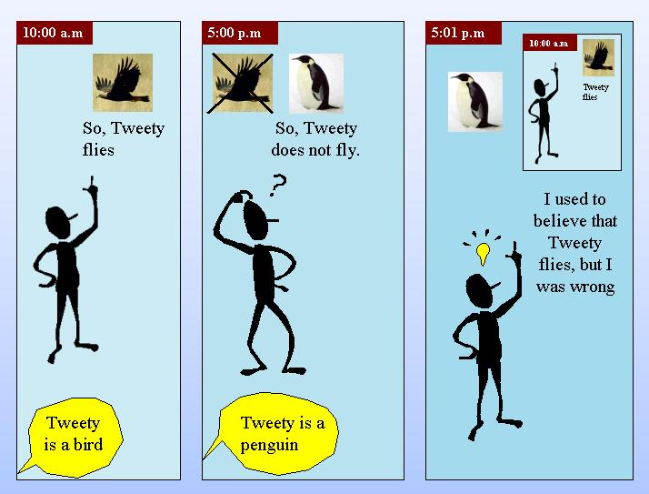
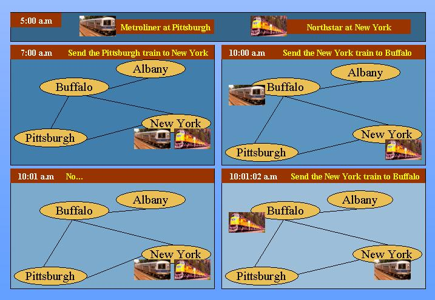

|
|
| Home | News | Seminars | Primer | Research | Applications | Papers | Conferences | People |
|
Reasoning by real systems evolves in timeThis fact is an essential part of the reasoning for many applications, e.g.,
Active Logicevolving time updated during reasoning.ALMA
Carne
Common Sense Reasoningtime 1: "Tweety is a bird" time 2: So, tweety flies. time 3: "Tweety is a Penguin" time 4: So, tweety does not fly. time 5: Tweety flies and doesn't fly -- CONTRADICTION! At this point ALMA marks the beliefs as contradictory, and thereby avoids using them in future inference. This allows other reasoning to proceed without littering the knowledge base with formulas derived from the contradiction. Then, various strategies can be brough to bear in handling the contradiction. In the example summarized below, ALMA employs preferences -- prefer the more specific rule over the more general -- and so re-instates the belief that tweety does not fly. Application to Natural Language Dialogue
[10:00:00] User: Send the New York train to Buffalo
System: [sends Metroliner to Buffalo]
[10:01:00] User: No...
System: [returns Metroliner to New York]
[10:01:02] User: Send the New York train to Buffalo
Good [sends Northstar to Buffalo]
Bad [sends Metroliner to Buffalo]
The pattern "Send X", "No, send X" generates a contradiction in ALMA and triggers a repair.
Common sense reasoning in ALMA involves rules like the following:
i: Now(i)
-------------
i+1: Now(i+1)
i: p
-----------------
i+1: pos_int(p,i)
i: p, not(p)
-------------------------
i+1: contra(p, not(p), i)
distrust(p)
distrust(not(p))
distrust(q)
i: p, if(p,q)
i+1: q
-----------------------
i+2: deriv_time(q, i+1)
i: p, if(p,q)
i+1: p, if(p,q), q
--------------------------------------------------
i+2: deriv(q, [[deriv(p,[]), deriv(if(p,q), [])]])
|
| Home | News | Seminars | Primer | Research | Applications | Papers | Conferences | People |